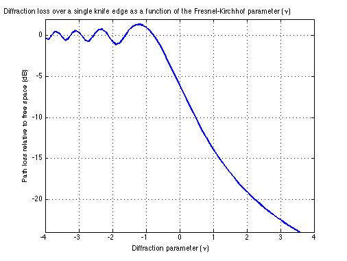

Diffraction loss over a single knife edge as a function of the
Contents
Fresnel-Kirchhof parameter (\nu)
Copyright 2007 Telecommunications Lab
nu = -4:.1:4; %Fresnel-Kirchhof parameter C = mfun('FresnelC',nu); %Fresnel cosine integral S = mfun('FresnelS',nu); %Fresnel sine integral J=20*log10(sqrt(((1-C-S).^2)+(C-S).^2)/2); %Diffraction loss plot(nu,J,'LineWidth',2); xlabel('Diffraction parameter (\nu)'); ylabel('Path loss relative to free space (dB)'); axis([-4 4 -24 2]); grid on; title('Diffraction loss over a single knife edge as a function of the Fresnel-Kirchhof parameter (\nu)');